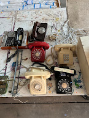
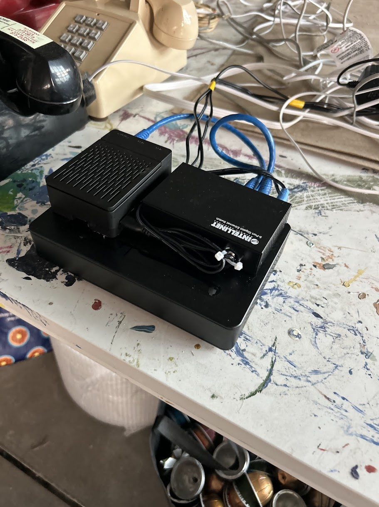
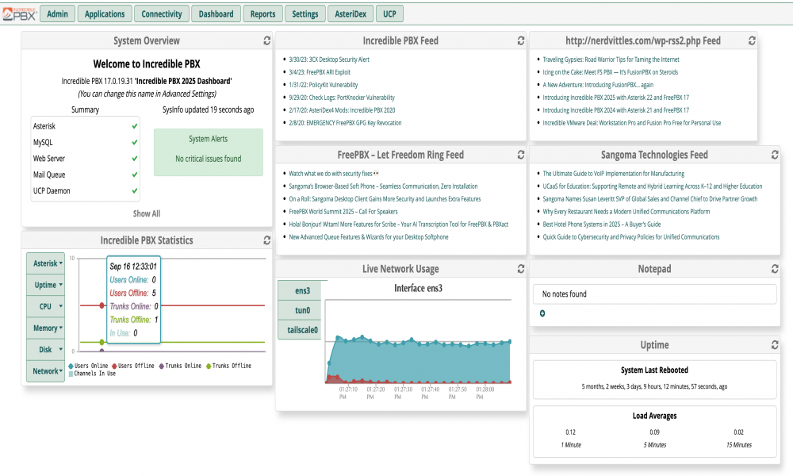
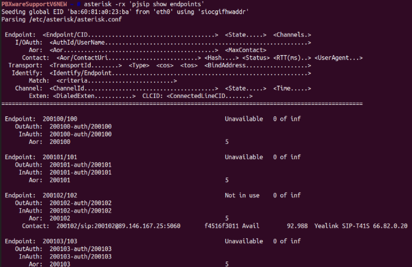
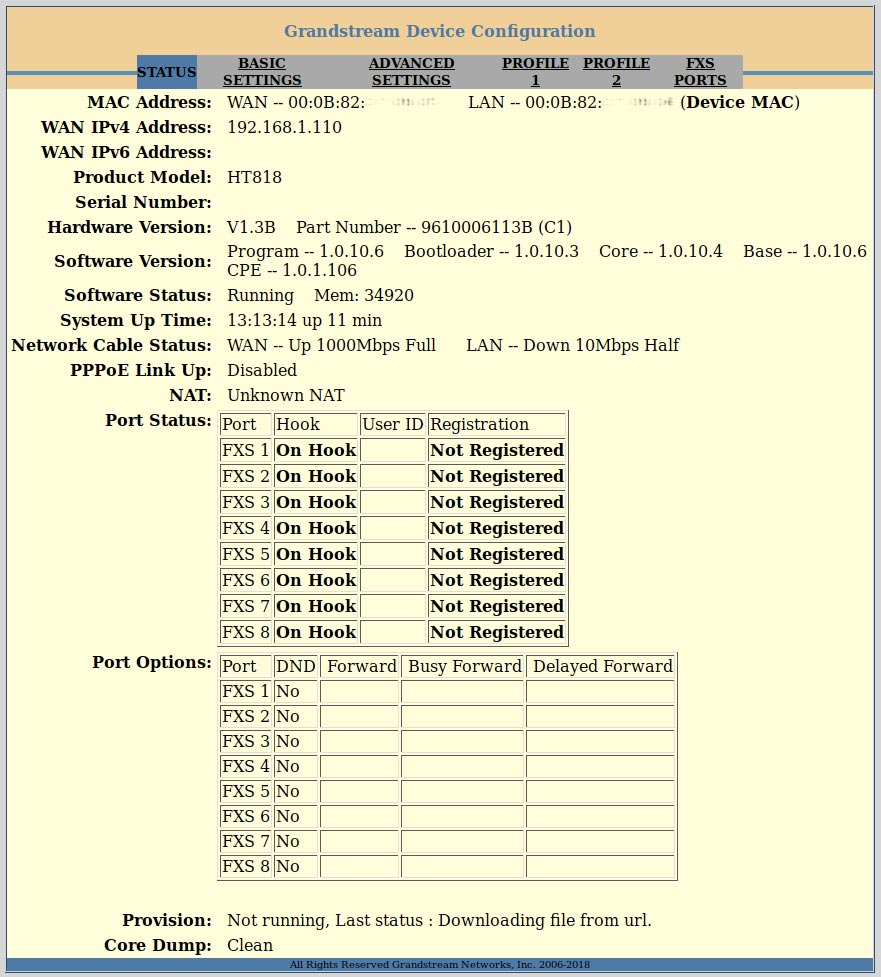
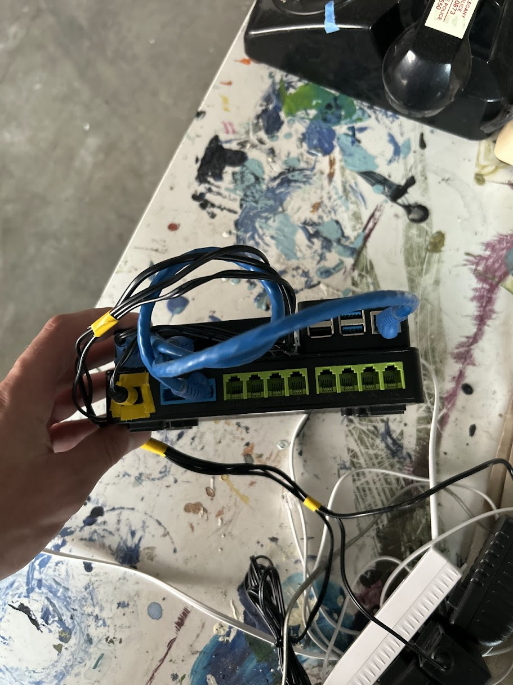

Interactive Phone System
Offline PBX • Rotary & dial phones • Actor- and audio-driven interactions
Overview

Imagine walking through the exhibit and a rotary phone rings on a desk. No staff in sight—so you pick up. On the line, a voice comments on what you’re wearing and references things you’ve already seen in the bank. That’s the experience this project aims to deliver: a closed phone network where phones call each other and hidden numbers trigger pre-recorded stories—all without paying a provider.
System Architecture

I boiled the problem down to three pieces:
- Computer: a Raspberry Pi to run the logic and host the PBX web UI.
- PBX software: ultimately IncrediblePBX (after a lot of dead ends).
- Analog gateway: a Grandstream HT818 so rotary/dial phones can register as extensions.
A fortunate break: the HT818 can interpret pulse dialing (most modern gateways only read tones). The trade-off: it rings at ~48 V, so a few vintage sets that demand a hotter ring won’t work—an acceptable limitation.
Hardware & Enclosure

All components live in a tidy, serviceable enclosure with Ethernet split so the Pi and HT818 talk on the same LAN and a laptop can plug in for updates. Keeping it offline was a hard requirement—no cloud, no bills, just a robust internal network.
PBX Software (The Hard Part)

A lot of guides point to RasPBX, but it was too outdated for my Raspberry Pi. I tried moving installs between images, wrestled with dependencies, and chased paid alternatives that didn’t fit. The breakthrough was IncrediblePBX—it runs on the Pi, exposes a local web UI, and lets me configure extensions, routes, and IVRs.

The setup is split: some work in the Pi terminal, some in the browser. Once dialplans and extensions were in, I added pre-recorded messages that auto-play when specific numbers are dialed—perfect for easter eggs scattered through the bank.
Gateway & Networking

The HT818 has its own web interface and prefers clear LAN/WAN roles, so I aligned addressing across the Pi, the gateway, and the phones. Getting every device onto the same subnet (and keeping it that way without Internet) was more fiddly than it sounds, but the result is a fully closed network with consistent registration.
Current Status

The prototype is complete: extensions register, rotary dialing works, and the pre-recorded lines are live. Next step is installing phones throughout the space and assigning numbers to scenes. With the Pi + IncrediblePBX + HT818 combo dialed in, deployment should be straightforward.